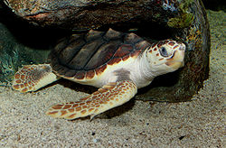

A continuación les mostraremos los diferentes tipos de tortugas que hay y los videos mas graciosos de los mismos con sus diferentes dueños :)
La Tortuga Verde
Esta tortuga de gran tamaño se distribuye por los mares tropicales y subtropicales alrededor del mundo, con dos poblaciones distintas en los océanos Atlántico y Pacífico. El nombre común de la especie deriva del color verde de su grasa, y no del color de su caparazón. Como especie reconocida en peligro de extinción por la UICN y la CITES, su explotación está prohibida en casi todos los países del mundo. Es ilegal capturar, dañar o matar tortugas de este tipo. Adicionalmente, algunos países han implementado varias leyes para proteger a las tortugas y sus sitios de anidación dentro de su jurisdicción. Sin embargo, la población de tortugas aún está en peligro de extinción debido a algunas prácticas humanas. En algunos países, las tortugas son aún cazadas por su carne y sus huevos son recolectados de los nidos para ser comidos. La contaminación daña también indirectamente a las poblaciones de tortugas. Muchas tortugas quedan atrapadas en las redes de pesca y mueren ahogadas. Finalmente, las tortugas pierden su hábitat debido a la expansión de los sitios de habitación humana. Esta ha sido una importante causa en la pérdida de los sitios de anidación de la tortuga verde. Las tortugas verdes son en su mayoría herbívoras, aunque las más jóvenes suelen alimentarse de medusas.
La Tortuga de Carey
La tortuga carey (Eretmochelys imbricata) es una especie de tortuga marina de la familia de los quelónidos. Es la única especie del género Eretmochelys. Existen dos subespecies, Eretmochelys imbricata imbricata que se puede encontrar en el océano Atlántico y Eretmochelys imbricata bissa, localizada en la región indo-pacífica.
Su aspecto es similar al de otras tortugas marinas. Tiene un cuerpo plano, un caparazón protector, y sus extremidades en forma de aletas están adaptadas para nadar en mar abierto. Se distingue fácilmente de otras tortugas marinas por su pico puntiagudo y curvo con una prominente mandíbula superior (tomium) y por los bordes en forma de sierra de su caparazón. Aunque la tortuga pasa parte de su vida en mar abierto, se la encuentra más frecuentemente en lagunas poco profundas y arrecifes de coral, donde encuentra fácilmente su presa preferida, las esponjas de mar. Algunas de las esponjas de las que se alimenta son conocidas por ser altamente tóxicas y letales para otros organismos por su alto contenido de óxido de silicio, lo que convierte a la tortuga carey en uno de los pocos animales capaces de alimentarse de organismos silíceos. También se alimentan de otros invertebrados, como tenóforos y medusas.
La Tortuga Boba
a tortuga boba es la tortuga con caparazón duro más grande del mundo. Los adultos tienen un rango de peso medio de 80 a 200 kg y una longitud de 70 a 95 cm. El peso máximo registrado es de 545 kg y la longitud máxima registrada del caparazón es 213 cm. La cabeza y la parte superior del caparazón tiene un color que puede variar desde amarillo-naranja hasta marrón-rojizo, mientras que el plastrón (parte inferior) es típicamente de color amarillo pálido. El cuello y los costados de la tortuga son de color marrón en la parte superior y amarillo en los lados y la parte inferior.
El caparazón sirve como armadura externa, aunque las tortugas bobas no pueden retractar sus cabezas o patas en la misma. Se divide en dos secciones: el carapacho (o espaldar) y el plastrón. El caparazón se compone de grandes placas o escudos. Por lo general, 11 o 12 pares de escudos marginales bordean el carapacho. Cinco escudos vertebrales corren por la línea media del carapacho, la cual está bordeada por cinco pares de escudos costales. El escudo nucal se encuentra a la base de la cabeza. El carapacho se conecta con el plastrón por tres pares de escudos inframarginales. El plastrón tiene escudos apareados gulares, humerales, pectorales, abdominales, femorales y anales.
El dimorfismo sexual de C. caretta sólo es aparente en los adultos. Los machos adultos tienen colas y garras más largas que las hembras. El plastrón de los machos es más corto que el de las hembras, presumiblemente para acomodar la cola más grande de los machos. El caparazón de los machos es más ancho y menos abombado que el de las hembras, y los machos suelen tener cabezas más grandes. No es posible determinar el sexo de los juveniles y subadultos por su anatomía externa, sino por medio de la disección, laparoscopia (una operación realizada en el abdomen), examen histológico (anatomía celular), y ensayos radioinmunológicos (estudio inmunológico con radiomarcaje).
Las glándulas lagrimales que se encuentran detrás de cada ojo permite mantener un equilibrio osmótico al eliminar el exceso de sal obtenido por la ingestión de agua de mar. En tierra, la excreción del exceso de sal da la falsa impresión de que la tortuga está llorando.

Tortuga Laúd
Dermochelys coriacea es una especie de reptil de la familia Dermochelyidae. Es la mayor de todas las tortugas marinas, alcanzando una longitud de 2,3 metros y un peso de más de 600 kilogramos. Un individuo macho llegó a pesar 916 kilogramos, aunque las tortugas de este tamaño son raras. Se encuentra en todos los mares tropicales o subtropicales y es la única especie de su familia. Esta especie tiene multitud de características únicas que la distinguen en buena medida de otras tortugas marinas.
Su tasa metabólica es aproximadamente 3 veces mayor de lo esperado en un reptil de su tamaño, lo que, unido a sus intercambiadores de calor contra corriente y su gran tamaño, permite mantener una temperatura corporal de hasta 18 °C sobre el agua circundante. Algunos científicos incluso opinan que la tortuga canal tiene alguna capacidad para generar su propio calor corporal, como un mamífero, a pesar de que los reptiles son ectotermos o de "sangre fría", por lo que dependen de la temperatura externa para regular la suya propia. Sin embargo, también puede considerarse a esta especie como gigantoterma. Tiene múltiples nombres comunes, entre ellos tortuga baula, tortuga laúd, tortuga coriácea y tortuga canal.
Tortuga Bastarda
La tortuga Bastarda o golfina (Lepidochelys olivacea) es una especie de tortuga de la familia Cheloniidae. Es la más pequeña de las tortugas marinas. Mide hasta 70 cm y pesa alrededor de 40 kilos. Se alimenta de una gran variedad de invertebrados marinos. Ampliamente distribuida en el mundo con excepción del Atlántico norte. Se considera como Vulnerable por la IUCN.
Mide aproximadamente de 60 a 70 cm; de adultos presentan un color verde olivo. El caparazón tiene forma de corazón o redondeado. Su longitud promedio en los adultos es de 67 cm, con un peso promedio aproximadamente de 38 kg, y máximo de 100. La cabeza es subtriangular y mediana; el caparazón se compone de cinco pares, con un máximo de 6 a 9 divisiones por lado; los márgenes son lisos; el caparazón es oscuro en color verde oliva, con una superficie inferior de color amarillo.
Tortuga Plana
La tortuga plana (Natator depressus) es una tortuga marina endémica de la plataforma continental de Australia. Forma parte de la familia Cheloniidae y es la única especie del género Natator.
Las hembras adultas miden entre 95 y 130 cm, y su peso varía de 100 a 150 kg. Es fácilmente reconocible por su caparazón cuando sus escamas marginales están dobladas hacia arriba (esto no siempre es sencillo). El color del caparazón es de color verdoso a marrón oliva. Tiene cuatro pares de escudos costales que se yuxtaponen. El primer par de escudos costales no está en contacto con las escalas de la nuca. El plastrón es de color crema a amarillo. Solo tiene una garra en sus aletas y un par de escamas prefrontales.
Realiza este breve Formulario para saber que tipo de tortuga sos: